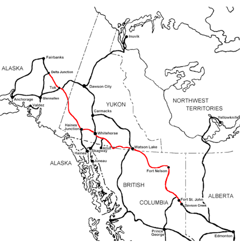

USA - Alaska
Vuelos: Rumbo
Alquilar coche en Vancouver
Pasar algún tiempo en Whistler (Holiday Inn o similar)
Great Alaska Highway (Dawson Creek-Fairbanks):
Seattle-Fairbanks: 7-10 días, algo más con paradas
The western acess route to Dawson Creek and the Alaska Highway from Seattle is by way of Interstate 5 to the BritishColumbia border, then through the Cariboo country of British Columbia to Prince George, B.C. From Prince George, the 250 mile long Hart Highway leads to Dawson Creek and milepost 0 of the Alaska Highway. Distance from Dawson Creek is 817 miles.
Muchas horas de sol, buena temperatura, pero ojo a los cambios bruscos de clima, llevar ropa de abrigo.
Las gasolineras no abren hasta tarde y no hay muchas.
Muchos moteles, no hace falta reservar.
Comer es caro, aprovechar las tiendas de comestibles.
Guía:
http://www.outwestnewspaper.com/akhwy.html
http://www.northtoalaska.com/
http://www.nxtbook.com/nxtbooks/atia/northtoalaska10/#/0
Major attractions: Muncho Lake, Liard Hotsprings, Watson Lake Signforest, SS Klondike, Kluane Lake, Trans-Alaska Pipeline Crossing
Coche de alquiler
https://www.autoeurope.es
900 801 789

Adventure Seeking - The Kenai Peninsula & Anchorage
Destinations: Anchorage, Seward, Hope, Cooper Landing, Sterling, Soldotna, Homer
Day 1 » Anchorage-Seward
From Ted Stevens International Airport board the Alaska Railroad or drive south on the "All American Road," the Seward Highway, a National Scenic Byway, to the coastal community of Seward. If you are traveling by cruise, disembark in this quaint waterfront port. Visit Alaska's SeaLife Center or mush with an Iditarod Champion mushing team on top of a glacier. Take a hike out to Exit Glacier and to the Harding Ice Field, a contiguous ice field larger than the state of Rhode Island.
Day 2 » Seward
Cruise or kayak Kenai Fjords National Park and observe stunning concentrations of wildlife up close and in person: sea otters, puffins, sea lions, kittiwakes, humpback and orca whales, harbor seals and more. Witness glaciers calving huge chunks of ice into the sea.
Day 3 » Hope & Cooper Landing
An hour drive from Seward will take you to the communities of Hope or Cooper Landing. Hope offers Alaska's finest Class IV and Class V guided rafting trips on Six Mile Creek as well as opportunities for gold panning. Cooper Landing hosts milder scenic floats on the Kenai River, excellent guided trout fishing, hiking and horseback riding through the Kenai National Wildlife Refuge, mountain biking and the famous combat fishing on the Russian River.
Day 4 » Sterling & Soldotna
Head south on the Sterling Highway, to the small roadside community of Sterling. Canoe fans from all over the world travel to the Swanson River System to portage and paddle the 150 mile canoe system that begins there. In Soldotna, charter a Kenai River fishing guide to take you on the famous Kenai River to fish for the largest King salmon in the world. Soldotna also has an abundance of boardwalks along the river for those who prefer to fish from the bank.
Day 5 » Homer
Continue your journey on the Sterling Highway to Homer, which offers panoramic views of Kachemak Bay State Park and the Homer Spit, a narrow arm of land that extends 4.5 miles into the water. Enjoy the shops and restaurants on the boardwalk, then get out and explore the bay by charter cruise, sea kayak or water taxi. Fish for world class halibut or charter a flightseeing trip to view the Katmai bears. Stop of the Alaska Islands and Ocean Visitor Center.
Day 6 » Across the Bay
Jump aboard a water taxi and head across the bay to the forest surrounding Kachemak Bay State Park, featuring 40 miles of hiking trails, mountains and glaciers. Take a guided natural history tour by kayak or foot and explore lush coastal forest and tidal pools teeming with marine, plant and animal life. Stay overnight in a private lodge perched on the shoreline, or visit a classic Alaskan seacoast settlement, such as Halibut Cove or Seldovia.
Day 7 » Homer-Anchorage
Head north via the Seward Highway. While traveling around Turnagain Arm look for a bore tide and beluga whales on your left and up to the cliffs on your right for mountain goats and Dall sheep. Arrive at the Girdwood Airport and check-in at Alpine for an amazing helicopter flight to a nearby glacier where a musher is waiting with his dog team. Gear up, slide into the dog sled and prepare for the ride of a lifetime along 3-miles of glacier!
Near Portage, tour the Alaska Wildlife Conservation Center, Alaska's only drive through wildlife park and see grizzly and black bears, moose, elk, caribou, musk ox, wood bison, hawks, eagles and more.
In Anchorage, head to Sourdough Mining Company restaurant for dinner. Afterwards, take in a show at the new Alaska Wild Berry Theatre located across the street. For dessert, don't forget to sample the yummy confections available at Alaska Wild Berry Products.
Day 8 » Anchorage Area
Drive north to Eklutna Lake Recreation Area. Rent a kayak or boat to explore the glacier-fed turquoise lake or rent a bicycle and explore the network of trails in this picturesque area. .
Alaska by Road
Featuring: Fairbanks, Far North, Chena Hot Springs, Delta Junction, Copper Valley, Wrangell St. Elias National Park, Valdez, Anchorage
Day 1 » Fairbanks
Start the day on a riverboat cruise aboard a sternwheeler. While enjoying the cruise, see a dog sledding presentation, a bush plane perform aerial stunts, and learn about life at an Athabascan Indian village. Afterwards do a gold tour at one of two mines and pan for gold. On the way back to town, stop by the Trans-Alaska Pipeline Visitor Center. Or be sure to visit the University of Alaska Museum of the North, one of the top 10 attractions in the state. Learn about our gold rush history, the dynamic aurora borealis, and the people that have made Alaska the diverse place it is today.
Day 2 » Far North
An early start awaits you this morning for your adventure north to Alaska’s Arctic. Several companies offer tours along the famed Dalton Highway, the only highway in the U.S. to cross the mighty Yukon River and to connect the highway system to the Arctic Ocean. View the majestic Brooks Range, walk on spongy Arctic tundra, and keep your eyes peeled for caribou, bears, and other wildlife. You’ll return to Fairbanks with an incredible experience, and an official Arctic Circle Certificate!
Day 3 » Chena Hot Springs Resort
This morning, drive one hour to a local hot springs. Be sure to bring your swimsuit so you can enjoy a leisurely swim in the outdoor hot springs, where 40-below weather will feel warm. The Aurora Ice Museum is the largest year-round ice environment in the world. It is created from over 1,000 tons of ice and snow, all harvested at Chena Hot Springs. Climb an Ice Tower, curl up in a Polar Bear Bed, watch a game of life size chess, or pull up a stool at the Stoli Ice Bar and have a martini pour through a sculpted ice fish into your very own sculpted ice glass. After a hearty meal at an historic resort, keep your eyes peeled for wildlife and/or the northern lights. Overnight in Chena.
Day 4 » Delta Junction-Copper Valley
Depart Chena through Fairbanks and head south on the Richardson Highway and enjoy a spectacular drive to Rika's Roadhouse. Stop by for historical tours, good food and unique gifts including specialty furs. The drive continues until you reach the Copper River Valley. Relax at a lodge or fly into the largest National Park in the United States, Wrangell St. Elias National Park. It equals six Yellowstone’s with four major mountain ranges that include nine of the 16 highest peaks in the U.S. Take in this spectacular scenery with a flightseeing trip into McCarthy. Explore the historic mining town of Kennicott and take a tour of the old copper mill or a walk on a glacier. Overnight in McCarthy or Kennicott or return to Copper Center.
Day 5 » Valdez
Continue south on the Richardson Highway to the seaside town of Valdez. En route, stop at Worthington Glacier. Valdez is known as “Little Switzerland” because of the dramatic mountains that surround it. It is also the gateway to Prince William Sound. Take a day boat cruise to Columbia Glacier, the second largest tidewater glacier in North America. Or book a full day or half day fishing trip. Guided rafting trips are also available through Keystone Canyon past towering waterfalls. Valdez also offers museums highlighting its history of the Gold Rush and the Good Friday Earthquake of 1964. Spend the night at one of the many B&B’s or hotels.
Day 6 » Anchorage
Experience our rich culture and heritage by visiting the Alaska Native Heritage Center, Anchorage Museum at Rasmuson Center or the Alaska Aviation Heritage Museum. Enjoy fine dining and shopping without having to pay a sales tax! You can also go flightseeing, take a day trip on a small boat cruise or explore the many trails Anchorage has to offer.
Experience the Culture
Destinations: Anchorage, Seward, Kenai Fjords National Park, Cooper Landing, Kenai, Ninilchik, Homer
Day 1 » Anchorage
Start your journey at the Anchorage Museum featuring world-class art including works by famous Alaskan painters, dioramas and exhibits. Enjoy a delicious lunch at the Marx Brothers Cafe in the museum. When you've had your fill of culture, catch the courtesy trolley to The Ulu Factory for a Uu knife demonstration. Then enjoy a free shuttle to the Alaska Native Heritage Center and explore Alaska's cultural heritage while experiencing the passing of traditions between generations. Take a guided tour to five Native village sites, experience a Native dance performance and shop for authentic crafts from Native Alaskan artisans. Enjoy dinner at one of Anchorage's many fine dining establishments.
Day 2 » Anchorage
Have breakfast at Gwennie's Old Alaska Restaurant with Anchorage artifacts and vintage photos. Drive to Earthquake Park and learn about the second largest earthquake in recorded history, which hit Anchorage in 1964 registering 9.2 on the Richter scale. Next, visit Lake Hood, the busiest seaplane base in the world, and the Alaska Aviation Heritage Museum. Make your way to historic city hall for a walking tour and visit the Oomingmak Cooperative Quviut Hand knit Shop. Try on some incredibly warm, soft and lightweight garments knit from the under-wool of the musk ox. Continue north to Eklutna Historical Park and tour the oldest continually inhabited Athabascan site in the Anchorage area. See the St. Nicholas Russian Orthodox Church, built in 1830, along with colorful Native spirit houses. Be sure to experience the Native village of Eklutna and take the Athabascan cultural tour. Finish the day at one of Anchorage's fine eating establishments.
Day 3 » Seward
Board the Alaska Railroad or drive south on the "All American Road," the Seward Highway, a National Scenic Byway, to the coastal community of Seward. If you are traveling by cruise, disembark in this quaint waterfront port. Visit Alaska's SeaLife Center, mush with an Iditarod Champion mushing team or take a helicopter to the top of a glacier. Hike Exit Glacier and beyond to the Harding Ice Field or tour galleries, museum and memorials.
Day 4 » Kenai Fjords National Park
From Seward, take a day cruise into Kenai Fjords National Park, carved by glacier ice and submerged under seawater. Observe stunning concentrations of wildlife up close and in person: sea otters, puffins, sea lions, kittiwakes, humpback and orca whales, harbor seals and more. Witness glaciers calving huge chunks of ice into the sea.
Day 5 » Cooper Landing & City of Kenai
An hour's drive north is Cooper Landing, a quaint roadside community nestled in the Chugach Mountains. Stop by the K'beq site, where Dena'ina Athabascans share their traditions and culture through interpretative walks featuring archaeological sites and artifacts over 500 years old. Continue west another hour to the city of Kenai where you will find the Kenai Visitors & Cultural Center. Glimpse the history of the Native Alaskans, the Russians and the oil industry, along with a traveling art exhibit, Alaskan videos and educational programs. Take a historic walking tour of Old Town Kenai and visit the Holy Assumption of the Virgin Mary Russian Orthodox Church. This is one of the oldest Russian Orthodox churches in Alaska and is classified as a National Historic Landmark. Visit Kenai Landing, a "Cultural and Recreational Interest Area," filled with renovated cannery structures from the early 20th century.
Day 6 » Ninilchik & Homer
Continue south on the Sterling Highway to the small Russian settlement of Ninilchik. Visit one of the most photographed buildings on the Kenai, Our Lord Russian Orthodox Church, founded in 1901. Resume your journey south to Homer, offering panoramic views of Kachemak Bay, the Kenai Mountains, glaciers and the famous Homer Spit. Visit the Pratt Museum, with exhibits on art, natural history, native cultures, homesteading and more. Visit Islands and Ocean Visitor Center and the famous Salty Dog Saloon. Take a historic harbor walking tour and shop the eclectic art galleries.
Day 7 » Across the Bay
Jump aboard a water taxi and head across the bay to the forest of Kachemak Bay State Park with 40 miles of hiking trails, mountains and glaciers. Take a guided natural history tour by kayak or by foot and explore lush coastal forest and tidal pools teeming with marine, plant and animal life. Stay overnight in a private lodge perched on the shoreline or visit a classic Alaskan seacoast settlement such as Halibut Cove or Seldovia.
Day 8 » Homer-Anchorage
Return to Anchorage by plane or highway. If traveling by road, visit the Alaska Wildlife Conservation Center near Portage for guaranteed wildlife sightings. As you travel Turnagain Arm look for a boar tide and beluga whales on your left and up to the cliffs on your right for mountain goats and Dall Sheep.
A Guided Tour
Ports along Alaska's Inside Passage
Day 1 - Ketchikan
Arrive in Alaska's "First City" and take a city tour inclusive of either Saxman Village or Totem Bight for a first-hand Native Alaska cultural experience. Take a day cruise or flightseeing tour to Misty Fiords National Monument returning in time to catch the Great Alaska Lumberjack Show.
Day 2 - Wrangell
After arrival, jump on a jetboat for the half-hour trip to the USDA Forest Service's Anan Creek - and bear viewing. Due to one of the largest pink salmon runs in the state, black and, at times, brown bear mutually feast here. A one-half mile boardwalk ends at a covered viewing stand giving visitors a close view of these impressive mammals.
Day 3 - Wrangell-Juneau
A morning tour of Wrangell includes a visit to the Tlingit ceremonial home of Chief Shakes before heading to Juneau, Alaska's capital city. A city tour will showcase Juneau and the Mendenhall Glacier or opt for a helicopter trip to land on a glacier and go dog mushing or glacier hiking.
Day 4 - Juneau
Enjoy Juneau's fine dining and shopping, many featuring local artisans before taking in the Alaska State Museum. From there you will hop a commuter jet or small plane to Gustavus, gateway to Glacier Bay National Park. Stay overnight at a rustic lodge or local B&B.
Day 5 - Glacier Bay National Park
Embark on a full-day cruise into famous Glacier Bay National Park. Watch for bear, humpback and orca whales, seals, sea lions and numerous waterfowl that make this a birders dream come true. The breathtaking scenery and spectacular glaciers will make this a day to remember. After the cruise, board a small commuter plane for Skagway. Enjoy a city or foot tour of the Gold Rush Town and take in a performance of "The Days of '98" after dinner.
Day 6 - Skagway
Historic wooden storefronts are perfectly preserved in the Klondike Gold Rush National Historical Park, testimony to the 20,000 gold-seekers who braved the Chilkoot and White Pass trails in 1898. A visit to Skagway would not be complete without taking the tour on the White Pass and Yukon Railroad. Re-live the adventure of ascending the pass on a narrow gauge railroad, and view the pass as the gold seekers did from the comfort of your seat on the train. After returning from the 40-mile roundtrip ride, depart for Sitka.
Day 7 - Sitka
In Sitka, you'll take in the Sitka National Historical Park, Alaska's oldest federally designated park, established in 1910 to commemorate the 1804 Battle of Sitka. All that remains of this last major conflict between Europeans and Alaska native is the site of the Tlingit Fort and battlefields, located within this scenic 113-acre park. Here you'll also see working Tlingit artists at the Southeast Alaska Indian Cultural Center carving, beading, sewing and eager to share their stories. Other opportunities include the Sitka Raptor Center, St. Michael's Russian Orthodox Church, and performances by the Sheet'ka Kwaan Naa Kahidi Dancers and/or the Russian New Archangel Dancers before departing.
Experience It All
Destinationa: Anchorage, Seward, Homer, Kodiak,Juneau, Gustavus, Glacier Bay
Day 1 » Anchorage
Begin your journey in Alaska's largest city where you can experience our rich culture and heritage. Visit the Alaska Native Heritage Center, Anchorage Museum at Rasmuson Center or the Alaska Aviation Heritage Museum. Enjoy fine dining and shopping downtown without having to pay a sales tax! Or take a day trip on the Alaska Railroad to go on a raft trip among icebergs in the backcountry.
Day 2 » Seward
Head south on the scenic Seward Highway 125 miles to Seward or disembark off your cruise ship in this quaint waterfront town. Spend the day exploring Kenai Fjords National Park on a day boat cruise where you have the opportunity to see glaciers and an abundance of marine wildlife including Steller sea lions, sea otters, whales and a variety of birds. Spend the evening at the Alaska SeaLife Center or go for a short hike to the face of Exit Glacier.
Day 3 » Homer
Head to the other side of the Kenai Peninsula to Homer. On the way enjoy the turquoise waters of the Kenai River and panoramic views of 4 active volcanoes across Cook Inlet. Visit the many art galleries and shops in downtown Homer or explore the Homer Spit, a long narrow finger of land jutting into Kachemak Bay. Fish for world class halibut, take a wildlife cruise or go to a remote wilderness lodge. Be sure to visit the Alaska Islands and Ocean Visitor Center or take a guided natural history tour.
Day 4 » Kodiak
Fly or take the Alaska Marine Highway to Kodiak. Enjoy your first day in Kodiak on a walking tour of town. Discover Kodiak's Russian and Alutiiqu Native history at the Baranov Museum and the Alutiiqu Museum & Archaeological Repository. Visit the oldest Russian Orthodox parish in Alaska or stroll down to the St. Paul Boat Harbor & Shelikof Waterfront. Explore the trails and scenery in some of the many State Parks on Kodiak Island.
Day 5 » Kodiak
Start the day early with a fly out trip to view the famous Kodiak brown bears. Fly out trips are available to the Katmai Coast or the Kodiak National Wildlife Refuge. It is easy to extend bear viewing opportunities by spending a couple of nights at a cabin or lodge. Spend your day fishing on a charter boat, fish camp or float trip. There are also several opportunities to fly out to a remote fishing lodge.
Day 6 » Juneau
Depart Kodiak and fly to Juneau, Alaska's capital city via Anchorage. Explore the city and its colorful waterfront. Take the tram to the top of Mt. Roberts for an eagle's eye view of the surrounding area. Visit one of the city's many museums, take a guided hike in the surrounding mountains or go zip lining through the rainforest. The Mendenhall Glacier is located just 12 miles from downtown Juneau. Take a helicopter flightseeing tour to the Juneau Ice field, go glacier trekking or take a dog sled ride on the ice field. In the evening have a relaxing dinner at one of the many fine restaurants in the city, or enjoy an outdoor Salmon Bake.
Day 7 » Gustavus
Fly to Gustavus, the gateway community to Glacier Bay National Park. Explore the area via mountain bike or on a guided hiking tour or enjoy some sea kayaking in the surrounding waters. Go fishing or take a whale watching tour.
Day 8 » Glacier Bay
Transfer to Glacier Bay Lodge in Bartlett Cove in the morning and take a full day cruise up Glacier Bay aboard the Spirit of Adventure. Visit the many glaciers and watch for the different species of wildlife along the way. You should look for whales, seals, sea lions and sea otters in the Bay. On land look for mountain goats, black bear, brown bear, moose and abundant bird life. On the water, you just might find a puffin! Upon your return to the dock, you will be transferred to Gustavus for your flight back to Juneau where you can get jet service back to Anchorage or Seattle.
The Great Land Tour
Destinations featured: Anchorage, Alaska Railroad, Denali National Park, Fairbanks, Far North, Delta Junction, Copper Valley, Valdez
Day 1 » Anchorage
Begin your journey in Alaska’s largest city where you can experience our rich culture & heritage. Visit the Alaska Native Heritage Center, the Anchorage Museum of History & Art or the Alaska Aviation Heritage Museum. Enjoy fine dining and shopping downtown without having to pay a sales tax! You can also go flightseeing, take a day trip on a small boat cruise or explore the many trails Anchorage has to offer.
Day 2 » Anchorage-Denali
Board the Alaska Railroad for an 8 hour scenic rail tour to Denali National Park. Enjoy views of the Great Land from vista dome cars. Upon arriving in Denali enjoy a rafting trip, horseback riding, hiking, a dinner theater show or fly into a lodge in the heart of the park. Overnight at one of the many hotels, lodges, cabins or B&b’s available.
Day 3 » Denali National Park
Spend the day on a guided wilderness tour of Denali National Park. Panoramic views of mountain ranges, rivers, lakes and glaciers provide the backdrop as you look for bears, caribou, wolves, marmots, ptarmigan and other animals. After the tour continue north to Fairbanks to overnight.
Day 4 » Fairbanks
Start the day on a riverboat cruise aboard a sternwheeler. While enjoying the cruise, see a dog sledding presentation, a bush plane perform aerial stunts, and learn about life at an Athabascan Indian village. Afterwards do a gold tour at one of two mines and pan for gold. On the way back to town, stop by the Trans-Alaska Pipeline Visitor Center. Or be sure to visit the University of Alaska Museum of the North, one of the top 10 attractions in the state. Learn about our gold rush history, the dynamic aurora borealis, and the people that have made Alaska the diverse place it is today.
Day 5 » Far North
An early start awaits you this morning for your adventure north to Alaska’s Arctic. Several companies offer tours along the famed Dalton Highway, the only highway in the U.S. to cross the mighty Yukon River and to connect the highway system to the Arctic Ocean. View the majestic Brooks Range, walk on spongy Arctic tundra, and keep your eyes peeled for caribou, bears, and other wildlife. You’ll return to Fairbanks with an incredible experience, and an official Arctic Circle Certificate!
Day 6 » Delta Junction-Copper Valley
Head south on the Richardson Highway and enjoy a spectacular drive. Visit the Santa Claus House in North Pole where you can mail a letter from Santa. Continue on your journey to Rika's Roadhouse. The centerpiece of the Big Delta State Historical Park, it is located nine miles north of Delta Junction, at the point where the Richardson Highway and the Trans-Alaska Pipeline cross the Tanana River. Stop by for historical tours, good food and unique gifts including specialty furs. The drive continues until you reach the Copper River Valley. Relax at a lodge or cabin or take a guided fishing trip.
Day 7 » Valdez
Continue south on the Richardson Highway to the seaside town of Valdez. En route, stop at Worthington Glacier. Valdez is known as “Little Switzerland” because of the dramatic mountains that surround it. It is also the gateway to Prince William Sound. Take a day boat cruise to Columbia Glacier, the second largest tidewater glacier in North America. Or book a full day or half day fishing trip. Guided rafting trips are also available through Keystone Canyon past towering waterfalls. Valdez also offers museums highlighting its history of the Gold Rush and the Good Friday Earthquake of 1964. Spend the night at one of the many B&B’s or hotels.
Day 8 » Anchorage
Return to Anchorage either by plane or via the Alaska Marine Highway through Whittier for your departure.
Summer Days in the Land of the Midnight Sun
Destinations Featured: Fairbanks, Arctic Circle
Day 1 »
Arrive into Fairbanks. Spend the afternoon learning about "the Golden Heart City" by a self-guided walking or driving tour. In the evening, treat yourself to a feast of all-you-can-eat Alaska salmon or halibut at an outdoor salmon bake. Top off your evening with a turn-of-the-century comedy revue before turning in for the night.
Day 2 »
This morning, set out on a cruise aboard a historic sternwheeler. See a dog musher run sled dogs, a bush plane in action and salmon pulled from an authentic fish wheel, filleted and prepared for smoking in a matter of seconds. After lunch at one of many riverside restaurant decks, do a gold mining tour at one of two mines. Each offers its own style along with gold panning. Afterwards, include a stop at the trans-Alaska oil pipeline viewing station on the Steese Highway.
Day 3 »
Stretch your legs on a hike in the panoramic vistas of the Chena River or White Mountains Recreation Areas. For those wanting to stroll, explore the 1,800-acre Creamer's Field Migratory Waterfowl Refuge with nature walks and overlooks to see migratory birds.
Day 4 »
Travel upstream to the Upper Chena River. Experience the authentic Alaska by float down its crystal-clear waters, stopping to fly-fish for Arctic grayling. This evening, relax in a natural hot springs.
Day 5 »
Fairbanks is home to the University of Alaska Fairbanks. Start the morning with a visit to the newly expanded University of Alaska Museum of the North, one of the state's top ten visitor attractions. Learn about Alaska's cultural and natural history and take in the Dynamic Aurora and Northern Inua live performances. Take in an afternoon tour to see musk ox and reindeer at the university's Large Animal Research Station. Take advantage of the long
daylight hours and include an evening tour. Head north above the Arctic Circle for a flight tour to an Alaska Native village, enjoy an evening canoe trip down a crystal-clear river, take in a visit with a dog musher and sled dogs in a log cabin home or rise above Fairbanks for a birds-eye view by hot air balloon.
Day 6 »
An early start awaits you this morning for your adventure north to Alaska's Arctic. Several companies offer tours along the famed Dalton Highway (the "Haul Road"), the only highway in the USA to cross the mighty Yukon River to connect the highway system to the Arctic Ocean. View the majestic Brooks Range, explore the Arctic tundra, and watch for caribou and bears. Return to Fairbanks with an incredible experience and an official Arctic Circle certificate.
Day 7 »
Whether driving, flying or taking the train, Fairbanks is well connected to the rest of Alaska and the world.
Inside the Inside Passage
Destinations Featured: Ketchikan, Sitka, Juneau, Haines, Skagway, Glacier Bay National Park
Day 1 » Ketchikan
Arrive in Ketchikan via Alaska Airlines or the Alaska Marine Highway. On your first day in Alaska, get an introduction to the indigenous people of the area. Take your pick of the Southeast Alaska Discovery Center, the Totem Heritage Center, Totem Bight State Park, and or Saxman Native Village. Overnight Ketchikan
Day 2 » Ketchikan
Choose a flight seeing or boating tour to Misty Fjords National Monument, one of America's most greatest treasures and some of Alaska's most spectacular scenery. On the other hand, try your luck landing a fighting Salmon or trophy Halibut. Ketchikan and the neighboring area offer an outstanding variety of sport fishing experiences. Flight to Sitka via Alaska Airlines. Overnight Sitka
Day 3 » Sitka
Today in Sitka, explore the Sheldon Jackson Museum with its incredible collection of Alaska Native artifacts. The Alaska Raptor Rehabilitation Center offers close-up encounters with local wildlife. Just six miles from downtown at Whale Park, visitors often have the chance to see Humpback whales that frequent the area. Flight to Juneau via Alaska Airlines - Overnight Juneau
Day 4 » Juneau
In Juneau today visit the Alaska State Museum and the Juneau Douglas Museum to get firsthand knowledge of the history and culture of the Capital city. The Mt. Roberts Tram will take you 1800 ft. from sea level for a bird's eye view of the surrounding area. A visit to Juneau would not be complete without seeing the Mendenhall Glacier, one of 38 glaciers that flow from the 1500 sq. mile Juneau Ice field - Overnight Juneau
Day 5 » Juneau
Explore Tracy Arm Fjord (full day cruise tour), home to the twin Sawyer glaciers. The fjord winds its way back to some of the most dynamic glaciers in Alaska; shear granite cliffs line the calm inside waters. Wildlife is abundant in the area; seals, sea lions, bears, Mt. goats and whales are often seen here. Overnight Juneau
Day 6 » Haines
Enjoy the morning with your cruise (2.5 hrs) on the Alaska Marine Highway, MV Fairweather (the fast ferry) to Haines. Discover the galleries, gift shops, and historic Fort Seward in this town on the shores of America's longest fjord. Explore the Chilkat Bald Eagle Preserve, be on the lookout for the varied wildlife, and take in the spectacular scenery. Overnight Haines.
Day 7 » Haines/Skagway
Today take the water taxi on to Skagway a browsers paradise; an ideal place to sit, shop, look and linger. Take in the Gold Rush history and ride the "Scenic Railway of the World" the White Pass and Yukon Route Railroad to the White Pass summit. Return to Juneau via air taxi to make connections on Alaska Airlines for flight home or on to more Alaska via the Alaska Marine Highway.
Additional tour to Glacier Bay as add-on day 1 »
From Haines, Skagway, or Juneau to Glacier Bay National Park you can choose from an air taxi from Haines or Skagway or take the Glacier Bay Express from Juneau to Bartlett Cove/Glacier Bay National Park. This ferry service features a 4-hour whale watching and wildlife tour to Glacier Bay National Park. Overnight in Gustavus or at Glacier Bay Lodge in Bartlett Cove
Day 2 » Glacier Bay National Park/Juneau
This morning you will board a fast and stable vessel to explore the magnificent glaciers and abundant wildlife of this unforgettable destination. Calving glaciers, breaching humpback whales, curious sea otters, and lively waterfowl are all part of the experience of Glacier Bay National Park. Return to Juneau via Alaska Airlines for connections to more of Alaska or home.
Second scenario: Day 1 »
Arrive in Juneau via Alaska Airlines or the Alaska Marine Highway. In Juneau today visit the Alaska State Museum and the Juneau Douglas Museum to get firsthand knowledge of the history and culture of the Capital city. The Mt. Roberts Tram will take you 1800 ft. from sea level for a bird's eye view of the surrounding area. Enjoy the historic downtown district. Overnight Juneau
Day 2 » Juneau/Mendenhall Glacier
A visit to Juneau would not be complete without seeing the Mendenhall Glacier, one of 38 glaciers that flow from the 1500 sq. mile Juneau Ice field. Helicopter or fixed wing aircraft can give you an up close and unforgettable experience. Finish the day with one of Alaska's favorite pastimes an authentic Salmon Bake. Overnight Juneau
Day 3 » Juneau/Glacier Bay National Park
Take the Glacier Bay Express to Bartlett Cove/Glacier Bay National Park. This service features a 4-hour whale watching and wildlife tour to Glacier Bay National Park. Overnight in Gustavus or at Glacier Bay Lodge in Bartlett Cove
Day 4 » Glacier Bay/Juneau
This morning you will board a fast and stable vessel to explore the magnificent glaciers and abundant wildlife of this unforgettable destination. Calving glaciers, breaching humpback whales, curious sea otters, and lively waterfowl are all part of the experience of Glacier Bay National Park. Return to Juneau via Alaska Airlines to make connection to Sitka. Overnight Sitka
Day 5 » Sitka
Today in Sitka, explore the Sheldon Jackson Museum with its incredible collection of Alaska Native artifacts. The Alaska Raptor Rehabilitation Center offers close-up encounters with local wildlife. Just six miles from downtown at Whale Park, visitors often have the chance to see Humpback whales that frequent the area. Overnight Sitka
Day 6 » Sitka/Ketchikan
Flight via Alaska Airlines to Ketchikan today and get an introduction to the indigenous people of the area. Take your pick of the Southeast Alaska Discovery Center, the Totem Heritage Center, Totem Bight State Park, and or Saxman Native Village. Overnight Ketchikan
Day 7 » Ketchikan
Choose a flight seeing or boating tour to Misty Fjords National Monument, one of America's most greatest treasures and some of Alaska's most spectacular scenery. On the other hand, try your luck landing a fighting Salmon or trophy Halibut. Ketchikan and the neighboring area offer an outstanding variety of sport fishing experiences. Depart Ketchikan via Alaska Airlines or the Alaska Marine Highway for home or more of Alaska.
Additional add-on at the beginning of tour to include Haines and or Skagway
Day 1 » Haines
Enjoy the morning with your cruise (2.5 hrs) from Juneau on the Alaska Marine Highway, MV Fairweather (the fast ferry) to Haines. Discover the galleries, gift shops, and historic Fort Seward in this town on the shores of America's longest fjord. Explore the Chilkat Bald Eagle Preserve, be on the lookout for the varied wildlife, and take in the spectacular scenery. Overnight: Haines
Day 2 » Haines/Skagway
Today take the water taxi on to Skagway a browsers paradise; an ideal place to sit, shop, look and linger. Take in the Gold Rush history and ride the "Scenic Railway of the World" the White Pass and Yukon Route Railroad to the White Pass summit. Return to Juneau via air taxi to make connections on Alaska Airlines for flight home or on to more Alaska via the Alaska Marine Highway.
Alaska’s Inside Passage
Destinations featured: Ketchikan, Wrangell, Petersburg, Juneau, Glacier Bay National Park, Gustavus, Sitka, Haines, Skagway
Day 1 » Ketchikan
Arrive in Ketchikan, Alaska's first port of call, via air or Alaska Marine Highway. Pick up a walking tour map and explore downtown attractions including historic Creek Street, Tongass Historical Museum, Southeast Alaska Discovery Center and unique local art galleries and shops. Learn about Ketchikan’s historic lumberjack history at the fun Great Alaskan Lumberjack Show or spend the afternoon on a kayak trip, amphibious Duck Tour. Take an excursion boat or plane to the 2.3 million acre Misty Fjords National Monument with its majestic fjords or choose a half-day guided sport fishing trip. Stay overnight in Ketchikan.
Day 2 » Ketchikan – Wrangell-Petersburg
Take the Alaska Marine Highway to Wrangell take an exhilarating run up the Stikine River by jet boat, visit Petroglyph Beach to view prehistoric rock carvings or take a guided bear viewing trip. Or stay on the ferry and continue on to the community of Petersburg also known as “Little Norway.” Enjoy the hospitality of this community and see traditional Norwegian painted buildings, take an excursion to LeConte Glacier or enjoy an afternoon of kayaking or fishing. Overnight in Wrangell or Petersburg.
Day 3 » Juneau
Fly to Juneau, Alaska’s modern day capital city. Explore the city and its colorful waterfront. Take the tram to the top of Mt. Roberts for an eagle’s eye view of the surrounding area. A visit to the Alaska State Museum, the City Museum, McCauley Salmon Hatchery, a tour of the historic AJ/Gastineau Mill and Gold Mine, one of the several whale watching tours and visits to many of the galleries in the city are some of the activities to enjoy on your first day in Juneau. The Mendenhall Glacier is located just 12 miles from downtown Juneau. Take a helicopter flightseeing tour to the Juneau Ice field, go glacier trekking, have a flightseeing tour with a glacier landing or take a dog sled ride on the ice field. In the evening have a relaxing dinner at one of the many fine restaurants in the city, or enjoy an outdoor Salmon Bake. Stay overnight in Juneau.
Day 4 » Gustavus
Depart this morning via the Auk Nu ferry or via air taxi to Glacier Bay National Park. You will have the option of taking the whale watching tour to Pt. Adolfus or disembark early in Bartlett Cove. Explore the area via mountain bike or on a guided hiking tour or enjoy some sea kayaking in the surrounding waters. Go fishing or wildlife viewing. All these services are available in Gustavus. Overnight Glacier Bay National Park or Gustavus (there are many fine Lodges and bed and breakfasts in the area)
Day 5 » Glacier Bay
In the morning transfer to Glacier Bay Lodge in Bartlett-Cove and take a full day cruise up Glacier Bay aboard the Spirit of Adventure. Visit the many glaciers and watch for the different species of wildlife along the way. You should look for whales, seals, sea lions, and sea otters in the Bay. On land look for mountain goats, black bear, brown bear, moose and abundant bird life. On the water, you just might find a puffin! Upon your return to the dock, you will be transferred to Gustavus for your flight back to Juneau. Stay overnight in Juneau.
Day 6 » Sitka
Board your flight on Alaska Airlines for a quick trip to Sitka. The historic seaside capital of Russian America, founded in 1804. Spend the day sightseeing in once the largest city on the entire west coast. Sitka today remains a center of Russian culture. Visit St. Michaels Cathedral, the Russian cemetery, blockhouse and the Russian Bishops house. The Sheldon Jackson Museum has one of the world’s finest collections of Eskimo, Aleut and Indian artifacts. Visit the Alaskan Raptor Center and learn all about the stately American Bald Eagle. You will also find a dramatic display of totem poles in the Sitka National Historical Park within easy access. Stay overnight Sitka.
Day 7 » Haines
Depart Sitka via Juneau and take the “fast ferry” to Haines. Travel northbound on the Lynn Canal to the beautiful fishing port of Haines, at the head of the Dalton Trail. Take a float trip or a jet boat through the Bald Eagle Preserve or rent a bicycle or kayak. Take the walking tour of Fort William H. Seward, now a thriving native arts center, and see a thrilling performance of the Chilkat Indian Dancers, and be sure to visit the Hammer Museum, a museum highlighting all the varieties of hammers! Stay overnight in Haines.
Day 8 » Skagway
Today take the local water taxi or Alaska Marine Highway on to Skagway. Historic wooden storefronts are perfectly preserved in the Klondike Gold Rush National Historical Park, testimony to the 20,000 gold-seekers who braved the Chilkoot and White Pass trails in 1898. A visit to Skagway is not complete without taking the tour on the White Pass and Yukon Railroad, re-live the adventure of ascending the pass on a narrow gauge railroad, and view the pass as the gold seekers did from the comfort of your seat on the train. You have the option of continuing into the interior of the Yukon and Alaska via the road system or flying to Juneau to depart Alaska.